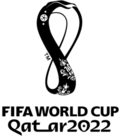
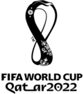

Sobre o Estádio
O Estádio Al Thumama será uma fusão de herança cultural árabe e arquitetura moderna. Durante a Copa do Mundo da FIFA Qatar™ 2022, ela receberá 40.000 torcedores empolgados para partidas até as quartas de final.
História
O Estádio Al Thumama é um dos sete estádios construídos para a Copa do Mundo da FIFA Catar 2022. Ele está localizado perto do Aeroporto Internacional de Hamad. Um acordo empresarial entre a Al Jaber Engineering do Qatar e a Tekfen Construction da Turquia está significativamente envolvida no trabalho de construção. O projeto arquitetônico, do arquiteto-chefe do Arab Engineering Bureau, Ibrahim Jaidah, se inspira no tradicional chapéu taqiyah, um boné tradicional usado por homens e meninos em todo o Oriente Médio. 50 mil metros quadrados de um parque público cercará o estádio. O estádio tem capacidade para 40.000 lugares. O Estádio foi inaugurado em 22 de outubro de 2021.
Copa do Mundo de 2022
O estádio receberá oito jogos da Copa do Mundo de 2022, sendo um deles das oitavas e outro das quartas de final.